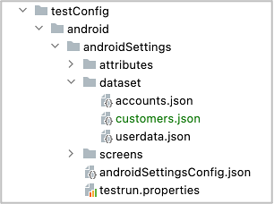
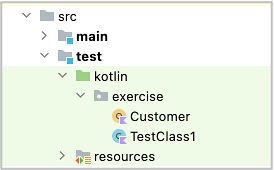

Creating your own data function
You can create your own data function using DatasetRepositoryManager.
Example
In case you want to create data function for customer.
- Create a dataset json file
customers.jsonunderdatasetdirectory.

{
"[customer1]": {
"name": "customer1",
"email": "customer1@example.com"
},
"[customer2]": {
"name": "customer2",
"email": "customer2@example.com"
}
}
- Add
datasetsection to testConfig.json, bind dataset namecustomerto the dataset json file.
androidSettingsConfig.json
"dataset": {
"customers": "testConfig/android/androidSettings/dataset/customers.json"
},
- Create a Kotlin Class file for the data function.

- Implement Customer object class as follows.
package exercise
import shirates.core.configuration.repository.DatasetRepository
import shirates.core.configuration.repository.DatasetRepositoryManager
/**
* Customer
*/
object Customer {
/**
* repository
*/
var repository: DatasetRepository? = null
/**
* getValue
*
* key format: [datasetName].attributeName
*/
fun getValue(key: String): String {
if (repository == null) {
repository = DatasetRepositoryManager.getRepository("customers")
}
val value = repository!!.getValue(longKey = key)
return value
}
}
/**
* customer
*/
fun customer(key: String): String {
return Customer.getValue(key = key)
}
Now you can use customer data function as follows.
CustomerTest.kt
package exercise
import org.junit.jupiter.api.Test
import shirates.core.configuration.Testrun
import shirates.core.driver.commandextension.output
import shirates.core.testcode.UITest
@Testrun("testConfig/android/androidSettings/testrun.properties")
class CustomerTest : UITest() {
@Test
fun test() {
scenario {
case(1) {
action {
output(customer("[customer1].name"))
output(customer("[customer1].email"))
}
}
}
}
}
Console
96 2022/09/28 21:16:24.736 {test} [SCENARIO] (scenario) test()
97 2022/09/28 21:16:24.736 {test-1} [CASE] (case) (1)
98 2022/09/28 21:16:24.736 {test-1} [ACTION] (action) action
99 2022/09/28 21:16:24.737 {test-1} [output] (output) customer1
100 2022/09/28 21:16:24.738 {test-1} [output] (output) customer1@example.com